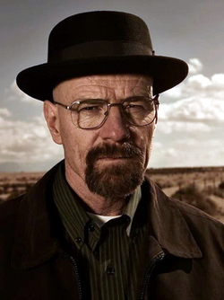
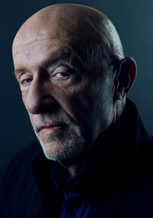
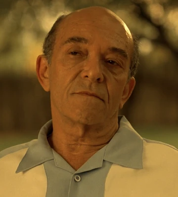
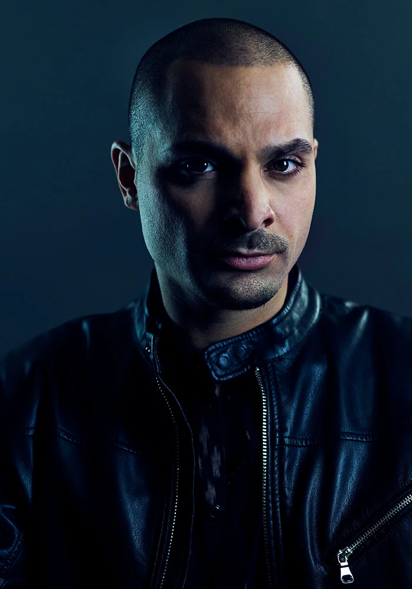

Breaking Bad is an American neo-Western crime drama television series created and produced by Vince Gilligan for AMC. Set and filmed in Albuquerque, New Mexico, the series follows Walter White (Bryan Cranston), an over-qualified, dispirited high-school chemistry teacher struggling with a recent diagnosis of stage-three lung cancer. White turns to a life of crime and partners with a former student, Jesse Pinkman (Aaron Paul), to produce and distribute methamphetamine to secure his family's financial future before he dies, while navigating the dangers of the criminal underworld. The series also stars Anna Gunn, Dean Norris, RJ Mitte, Betsy Brandt, Giancarlo Esposito, Jonathan Banks, and Bob Odenkirk.





